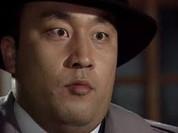
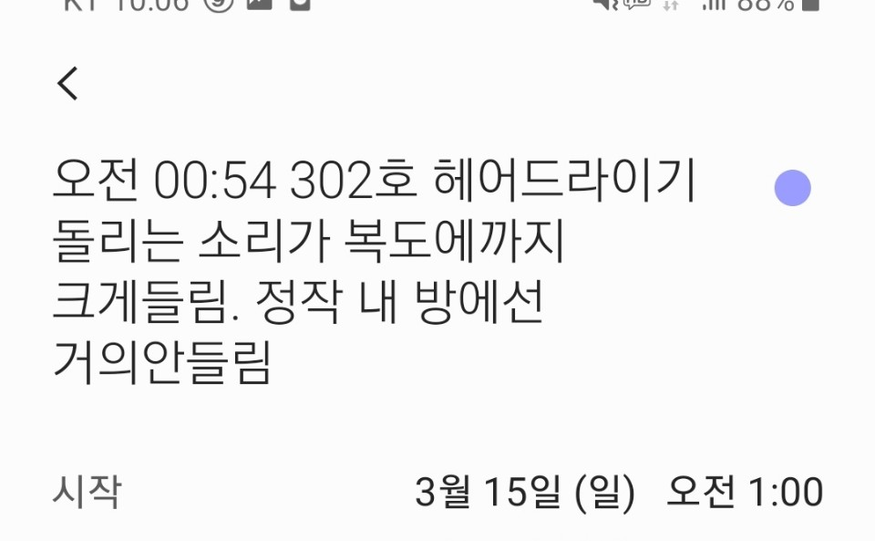

어머니의 명령(?)으로 이전에 살던 자취방을 빼고 새로운 원룸을 찾아 1시간 동안 돌아다니던 중 원래 살던 곳 근처의 원룸건물이 생각났다. 사실 월세가 많이 비싼 곳 임을 알았기에 배제하고 돌아다녔지만 눈에 계속 밟혀서 결국 문 앞에 적힌 전화번호를 눌렀다. 집주인 아줌마가 바로 나오셔서 방을 소개 해주는데
확실히 다른 기본 옵션들과 채광, 방의 넓이, 서비스 등이 지금까지 봐왔던 자취방들과는 차원이 달랐고, 무엇보다 엄청나게 큰 책상이 너무 마음에 들었다. 그 이후 다른 자취방은 기억에 거의 안남았고, 부모님께 방을 보여드리자 부모님도 바로 계약을 하자는 말씀을 하셨다. 집주인 아줌마, 아저씨는 특별한 주의의 말은 하지 않으셨고 나는 원룸계약서를 작성했다.
부모님이 차를 끌고 이사를 도와주러 오셨고 안성에 있던 친구들이 이사를 도와주기 위해 이전 방과 지금 살고 있는 방을 왔다갔다 했다. 그 인원이 5명. 내 부모님 2, 나, 합쳐서 8명이 이사를 하니 엄청 금방 끝났다. 집주인 아저씨는 웃으면서 친구들을 뭐이리 많이 불렀냐고 말하시며 공유기 등 옵션들을 가져다 주셨다. 다같이 점심을 먹은 뒤, 부모님은 인천본가로 돌아가시고, 친구들도 각자 집으로 갔다.
그날 저녁. 침대에 누워서 핸드폰으로 유튜브를 보고있는데 집주인한테 전화가 왔다.
“301호 학생, 이 곳은 방음이 잘 안되서 시끄럽게 하면 안돼~”
아유 뭐 그런 기본적인 얘기를ㅎㅎ 당연히 알겠다고 하면서 넘어가려 하는데
“옆 방의 살고 있는 사람이 저기 XX중학교 여선생인데 많이 예민하시니까 특히나 조용히 해야해~”
? 그렇구나.. 예민하구나.. 하면서 이웃 잘못만났다는 생각이 살짝 들려고 한다. 그런데 거기에 이어서
“바로 옆 주택 건물 주인 할아버지가 엄청 성질이 더러워~ 조금만 시끄럽게 하면 이 건물 찾아와서 문을 발로차고 욕짓거리를 하거든~ 학생들 때문에 몇번 찾아오시더라고~”
?? 아니 왜 이런 얘기들을 이전엔 말없다가 이사하고나서…? 황당함과 어이없어서 아..아 예.. 이런식으로만 대답하고 있는데
“친구들도 막 데리고와서 시끄럽게 놀고 그러면 곤란해~ 우리 각층 복도마다 cctv가 있거든? 그래서 누가 어떤 방에 나가고 들어가는지 다 보여~”
집주인 아저씨는 계약 전에는 아무 얘기 없다가 돈 받을거 다 받고 이사까지 하니까 그제서야 이웃 집과 마찰이 생길까봐 나를 감시 한다는 말과 함께 충고들을 해주셨다. 아니 cctv로 감시하는 건 좀 선 넘은 거 아닌가.
코로나가 심각수준으로 유행을 하기 때문에 친구들을 아예 안불렀을 뿐더러 나도 인천에 있다가 최근에 안성온 이후 밖을 거의 안나갔다. 근데 그날 따라 오랜만에 친구 한 명이 컴퓨터를 쓰기 위해 내 방에 놀러왔다. 그 친구는 게임을, 나는 핸드폰을 하며 시간을 보내고 있는데 집주인한테 전화가 왔다.
“학생, 옆 방에서 너무 시끄럽다고 저희한테 연락이 왔어요. 며칠동안 너무 시끄러워서 포스트잇 에다가 조용히 해달라고 적어놓고 문앞에 붙여 놨는데도 소용이 없데요.”
며칠동안 아무도 없던 집이, 그 이후 밖에도 거의 안나가고 혼자 아무 말 없이 살고 있는 집이 너무 시끄럽다고 컴플레인이 들어왔다. 전화로 나는 뭐 크게 소리를 내거나 한적이 없다고 말을 해도 본인들은 그저 옆방이 그랬다더라 하면서 내 말은 듣지 않아서 답답하기만 했다. 그런데 집주인 아저씨가 ‘친구들을 불러서..’, ‘사람들을 데리고 오면…’ 이런 말을 계속 하신다. 그런데 그 때
집주인 아줌마, 아저씨가 이삿날 내가 불렀던 친구들의 숫자를 보고 뭐라고 하셨던게 생각이 났다. 그 이후로 계속 나에게 전화를 걸었을 때 친구들을 부르네 뭐네 하시던것도 떠올랐다. 아마 그 때 이후로 계속 나에게 친구 데려오지 말라고 견제를 하시고 계신다고 판단했다.
“소리를 지르고 고성방가를 하는건 문제가 되지만 대학생이 자취방에 친구를 데려오는 것 자체를 cctv까지 들먹이며 제재하는 것은 분명히 문제가 있다고 생각한다. 또한 나는 계속 인천에 있었다가 안성에 온지 얼마 안됐으며 밖에도 안나가고 혼자 조용히 있었다. 없는 소음을 만들어서 냈다고 주장하는 것도 억울하다”
를 어떻게 정중하고 예의바르게 얘기해야 하나 고민하고 있는데 갑자기 집주인 아저씨, 아줌마가 내방에 찾아오셨다. 너무 갑자기, 그리고 빨리 찾아와서 생각 정리가 안됬지만 다행히 저 위의 내용을 정중하게 하지만 단호하게 전달했다. 솔직히 나도 화가 많이 났기 때문에 언성이 기본수준에서 아주약간 높긴 했다. 짧은 시간동안 대화 한 결과 내가 아니라 밑에 층이 시끄럽게 한 것이라는 결론이 나왔고 집주인 아줌마 아저씨는 다시 돌아가셨다.
며칠이 지난 날. 나는 친구들과 마이크를 키고 소통하며 게임을 하고 있었다. 물론, 소리를 지른다거나 큰 소리를 내진 않았다. 그런데 갑자기 누군가 내 문을 두드리며 “저기요! 너무 시끄러워요! 조용히 해주세요!”라고 소리를 쳤다
아 문제의 그 옆집 여자구나. 라는 생각이 들었다. 그러고 문이 닫히는 소리가 들려서 나는 바로 헤드셋을 집어던지고 달려나갔다.
그 여자는 내가 시끄럽게 소리를 지르는게 다 들린다. 게임을 하고 있지 않느냐? 그런 소리가 다 들린다 라고 주장하였다. 나는 시끄럽게 한 적도 없고 게임도 친구들과 대화하는 수준이라고 맞받아 치는 순간 마치 짠 듯이 밑에 층에서 소리를 지르는 소리가 들렸다. 이때다 싶어 며칠전에 집주인 아저씨가 나한테 했던말을 반박하자 그 여자는 밑에 층이 시끄러운걸 혼동했다며 사과도 안하고 집으로 들어가버렸다.
이후 나도 나름 주의를 하며 살고 있기 때문에 아직 소음 문제로 부딪힌 적은 없다. 집주인 아저씨 아줌마는 내게 사과하셨다. 다만 사과 하시면서도 ‘친구들을 부르는게 어쩌고..’는 계속 얘기 하시길레 한 귀로 흘려버렸다(당연히 나는 이전처럼 친구들을 부른다). 물론 옆집 여자는 내게 사과하지 않았다.
최근에 집주인 아저씨가 세탁기를 고쳐주러 오시면서 옆집 분이 많이 예민해서 또 찾아와 뭐라 할 수 있다고 말씀하셨다.
